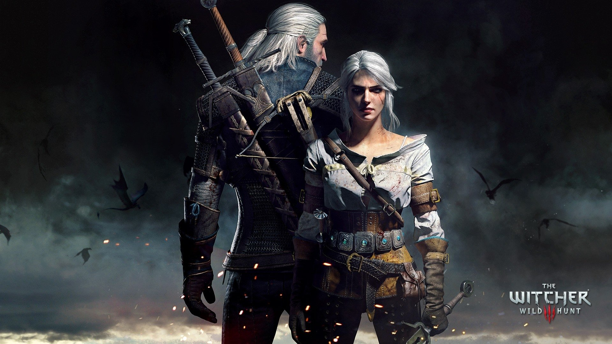

The Witcher 3: Wild Hunt

Разработчик: SD Project Red.
Дата релиза: 19 мая 2015.
Жанр: action-RPG.
Описание
Действие игры происходит в вымышленном фэнтезийном мире, основанном на славянской мифологии.
Главный герой Геральт из Ривии, «ведьмак» — профессиональный охотник на чудовищ — отправляется в путешествие в поисках девушки по имени Цири, обладающей сверхъестественными способностями.
Награды
Игра получила чрезвычайно высокие оценки прессы: обозреватели высоко оценили повествование, дизайн мира, боевую систему и графическую составляющую игры.
«Ведьмак 3: Дикая Охота» оказывалась победительницей во многих категориях — игровой дизайн, визуальный дизайн, звуковой дизайн и тому подобных.
Она была удостоена звания лучшей игры 2015 года от IGN, GameSpot, Game Informer и многих других изданий.
Mass effect 1-3

Разработчик: Bioware.
Дата релиза: 20 ноября 2007, 19 марта 2009, 7 марта 2012.
Жанр: шутер от 3-го лица, action-RPG.
Описание
Капитан Шепард отправляется на задание, целью которого является доставить артефакт древней цивилизации протеан, найденный археологами на одной из человеческих колоний.
Во время выполнения задания область археологических раскопок подвергается атаке гетов — расы разумных роботов, которые также пытаются захватить артефакт.
При контакте с артефактом Шепард видит некое видение апокалиптического характера.
В ходе дальнейших путешествий Шепард понимает, что видение является предзнаменованием будущего.
На своём пути он встречает представителей инопланетных рас, которые впоследствии присоединяются к его команде.
Шепард получает задание нейтрализовать турианца Сарена. Сарену каким-то образом удалось заключить союз с гетами.
С их помощью он желает ускорить возвращение древней кибернетической расы Жнецов, которая, согласно легендам, должна уничтожить всю разумную жизнь в Галактике.
Fallout 3, 4, New Vegas
Разработчики: Obsidian Entertainment, Bethesda Game Studios.
Дата релиза: 30 октября 2008, 22 октября 2010, 22 октября 2015.
Жанры: RPG, action-RPG.
Описание
Fallout — серия постапокалиптических компьютерных ролевых игр.
Действие происходит после ядерной войны на территории США, которая превратилась в радиоактивную пустыню и охвачена анархией.
Хотя события и помещены в далёкое будущее, спустя сотни лет после ядерного конфликта,
Fallout отличается характерным ретрофутуристическим стилем, вдохновлённым массовой культурой 40—50-х годов XX века.
Игры основной серии, обладая открытым миром, позволяют свободно исследовать разнообразные локации и решать задачи различными способами.